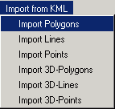
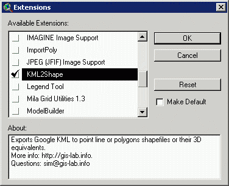

Short description of the instrument to convert data from KML to Shape-file format
One the ways to convert data from kml to shape-file format is to use special extension for Arcview GIS 3.x. This extension switches on additional menu which contains 3 instruments: import for polygons, lines and points. Import can be done in batches, for this, several KMLs should be selected pressing SHIFT while selecting in Arcview "Open Google KML file" box.

Though other converters already exist, they were not always able to do what we wanted them to do or they require installation of other additional software. Because of this and partly for fun, we wrote this piece of software to convert data not going anywhere but Arcview. You can find links on the other converters of this kind in the end of the article, may you will find them more convinient.
KML files can contain simultaneously points, lines and polyons, so, to import everything from such files, run each menu item one after the other on the same KML file.
To start using this extension - download, install and switch it on - kml2shp.avx (File\Extensions...)

Some notes:
KML format is changing slightly depending on properties of the object and how it was obtained, so in some cases out extension can fail. If this happened, you can send us an example of such KML and we'll be happy to fix our extension to correctly import it.
To import KML in shape you can also use:
Дата создания: 27.07.2007
Автор(ы): Максим Дубинин